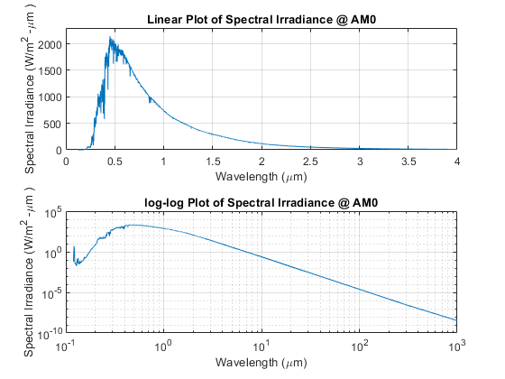
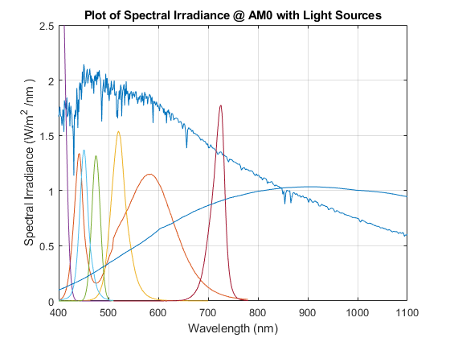
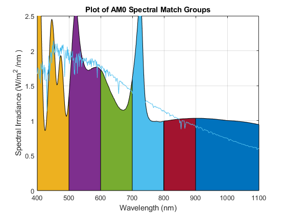

clc;
clear;
close all;
filename='ASTM_SolarIrradiance_AM0.csv';
Solar_reference = csvread(filename,1,0,[1 0 1697 1]);
total=trapz(Solar_reference(:,1),Solar_reference(:,2));
fprintf('Solar Reference Total Irradiance %.2f\n',total);
filename='PhotopicCurve.csv';
photopic = csvread(filename,1,0,[1 0 471 1]);
filename='QTH_v1.csv';
QTH = csvread(filename,1,0,[1 0 212 1]);
watt=.660;
filename='GD_CSXPM1_14_20160712_spectrum.csv';
LED_B = csvread(filename,1,0,[1 0 66 1]);
B_intensity_multiplier = (watt ./ trapz(LED_B(:,1), LED_B(:,2)));
LED_B (:,2) = LED_B(:,2) .*B_intensity_multiplier;
watt = 0.383;
filename='far_red_spectrum.csv';
LED_R = csvread(filename,1,0,[1 0 136 1]);
red_intensity_multiplier = watt ./ trapz(LED_R(:,1), LED_R(:,2));
LED_R (:,2) = LED_R(:,2) .*red_intensity_multiplier;
watt=.930*3/4;
LED_UV= guass_estimate(405,20);
UV_intensity_multiplier = watt ./ trapz(LED_UV(:,1), LED_UV(:,2));
LED_UV (:,2) = LED_UV(:,2) .*UV_intensity_multiplier;
lumen=45.7;
LED_BB= guass_estimate(475,20);
photopic_band = photopic(photopic(:,1)>LED_BB(1,1) & photopic(:,1)<LED_BB(end,1),:);
LED_BB_interp=interp1(LED_BB(:,1),LED_BB(:,2),photopic_band(:,1));
Bblue_intensity_multiplier = (lumen) ./ (683*trapz(photopic_band(:,1), LED_BB_interp.*photopic_band(:,2)));
LED_BB (:,2) = LED_BB(:,2) .*Bblue_intensity_multiplier;
lumen = 140;
filename='white_blue_v2_spectrum.csv';
LED_W_B =csvread(filename,1,0,[1 0 66 1]);
photopic_band = photopic(photopic(:,1)>LED_W_B(1,1) & photopic(:,1)<LED_W_B(end,1),:);
LED_W_interp=interp1(LED_W_B(:,1),LED_W_B(:,2),photopic_band(:,1));
blue_intensity_multiplier = (lumen.*0.0426) ./ (683*trapz(photopic_band(:,1), LED_W_interp.*photopic_band(:,2)));
LED_W_B (:,2) = LED_W_B(:,2) .*blue_intensity_multiplier;
filename='white_yellow_v2_spectrum.csv';
LED_W_Y =csvread(filename,1,0,[1 0 136 1]);
photopic_band = photopic (photopic(:,1)>LED_W_Y(1,1) & photopic(:,1)<LED_W_Y(end,1),:);
LED_W_interp=interp1(LED_W_Y(:,1),LED_W_Y(:,2),photopic_band(:,1));
yellow_intensity_multiplier = (lumen.*0.9574) ./ (683*trapz(photopic_band(:,1), LED_W_interp.*photopic_band(:,2)));
LED_W_Y (:,2) = LED_W_Y(:,2) .*yellow_intensity_multiplier;
LED_W= [LED_W_B(1:end-1,:);LED_W_Y];
filename='true_green_spectrum.csv';
LED_G = csvread(filename,1,0,[1 0 150 1]);
lumen=143;
photopic_band = photopic (photopic(:,1)>LED_G(1,1) & photopic(:,1)<LED_G(end,1),:);
LED_G_interp=interp1(LED_G(:,1),LED_G(:,2),photopic_band(:,1));
green_intensity_multiplier= (lumen) ./ (683*trapz(photopic_band(:,1), LED_G_interp.*photopic_band(:,2)));
LED_G (:,2) = (LED_G(:,2) .*green_intensity_multiplier);
N_W_LEDS=9;
N_G_LEDS=4;
N_UV_LEDS=2;
N_QTH=0.25;
N_B_LEDS=1;
N_BB_LEDS=1;
N_R_LEDS=3;
totalLED = combineSpectrum(LED_W,LED_UV,N_W_LEDS,N_UV_LEDS);
totalLED = combineSpectrum(totalLED,LED_G,1,N_G_LEDS);
totalLED = combineSpectrum(totalLED,LED_B,1,N_B_LEDS);
totalLED = combineSpectrum(totalLED,LED_BB,1,N_BB_LEDS);
totalLED = combineSpectrum(totalLED,LED_R,1,N_R_LEDS);
AREA=0.02;
totalIrradiance=totalLED;
totalIrradiance(:,2) = totalLED(:,2)./AREA;
totalIrradiance=combineSpectrum(totalIrradiance,QTH,1,N_QTH);
figure (1);
tiledlayout(2,1)
nexttile
plot(Solar_reference(:,1),Solar_reference(:,2));
grid on;
axis([0 4 0 2300]);
title('Linear Plot of Spectral Irradiance @ AM0');
xlabel('Wavelength (\mum)');
ylabel('Spectral Irradiance (W/m^2 -\mum )');
nexttile
loglog(Solar_reference(:,1),Solar_reference(:,2));
grid on;
title('log-log Plot of Spectral Irradiance @ AM0');
xlabel('Wavelength (\mum)');
ylabel('Spectral Irradiance (W/m^2 -\mum )');
figure (2);
plot(Solar_reference(:,1).*1000,Solar_reference(:,2)./1000);
hold on
plot(LED_W(:,1),(LED_W(:,2).*N_W_LEDS)./AREA);
hold on
plot(LED_G(:,1),(LED_G(:,2).*N_G_LEDS)./AREA);
hold on
plot(LED_UV(:,1),(LED_UV(:,2).*N_UV_LEDS)./AREA);
hold on
plot(LED_BB(:,1),(LED_BB(:,2).*N_B_LEDS)./AREA);
hold on
plot(LED_B(:,1),(LED_B(:,2).*N_B_LEDS)./AREA);
hold on
plot(LED_R(:,1),(LED_R(:,2).*N_R_LEDS)./AREA);
hold on
plot(QTH(:,1),QTH(:,2).*N_QTH);
hold off
grid on;
axis([400 1100 0 2.5]);
title('Plot of Spectral Irradiance @ AM0 with Light Sources');
xlabel('Wavelength (nm)');
ylabel('Spectral Irradiance (W/m^2 /nm )');
figure(3);
plot(Solar_reference(:,1).*1000,Solar_reference(:,2)./1000);
hold on
axis([400 1100 0 2.5]);
section=totalIrradiance(totalIrradiance(:,1)>=300 & totalIrradiance(:,1)<=400,:);
LED_sum=trapz(section(:,1),section(:,2));
area(section(:,1),section(:,2));
hold on
section=totalIrradiance(totalIrradiance(:,1)>=400 & totalIrradiance(:,1)<=500,:);
LED_sum=trapz(section(:,1),section(:,2));
area(section(:,1),section(:,2));
fprintf('400-500 %.1f\n',((LED_sum)/total).*100);
hold on
section=totalIrradiance(totalIrradiance(:,1)>=500 & totalIrradiance(:,1)<=600,:);
LED_sum=trapz(section(:,1),section(:,2));
area(section(:,1),section(:,2));
fprintf('500-600 %.1f\n',((LED_sum)/total).*100);
hold on
section=totalIrradiance(totalIrradiance(:,1)>=600 & totalIrradiance(:,1)<=700,:);
LED_sum=trapz(section(:,1),section(:,2));
area(section(:,1),section(:,2));
fprintf('600-700 %.1f\n',((LED_sum)/total).*100);
hold on
section=totalIrradiance(totalIrradiance(:,1)>=700 & totalIrradiance(:,1)<=800,:);
LED_sum=trapz(section(:,1),section(:,2));
area(section(:,1),section(:,2));
fprintf('700-800 %.1f\n',((LED_sum)/total).*100);
IR_axis = 800:1:1500;
QTH_interp=interp1(totalIrradiance(:,1),totalIrradiance(:,2),IR_axis, 'spine');
IR = [IR_axis.' QTH_interp.'];
hold on
section=IR(IR(:,1)>=800 & IR(:,1)<=900,:);
LED_sum=trapz(section(:,1),section(:,2));
area(section(:,1),section(:,2));
fprintf('800-900 %.1f\n',((LED_sum)/total).*100);
hold on
section=IR(IR(:,1)>=900 & IR(:,1)<=1100,:);
LED_sum=trapz(section(:,1),section(:,2));
area(section(:,1),section(:,2));
fprintf('900-1100 %.1f\n',((LED_sum)/total).*100);
hold on
section=IR(IR(:,1)>=1100 & IR(:,1)<=1200,:);
LED_sum=trapz(section(:,1),section(:,2));
area(section(:,1),section(:,2));
hold on
section=IR(IR(:,1)>=1200 & IR(:,1)<=1300,:);
LED_sum=trapz(section(:,1),section(:,2));
area(section(:,1),section(:,2));
hold on
section=IR(IR(:,1)>=1300 & IR(:,1)<=1400,:);
LED_sum=trapz(section(:,1),section(:,2));
area(section(:,1),section(:,2));
hold on
section=IR(IR(:,1)>=1400 & IR(:,1)<=1500,:);
LED_sum=trapz(section(:,1),section(:,2));
area(section(:,1),section(:,2));
hold on
plot(Solar_reference(:,1).*1000,Solar_reference(:,2)./1000);
hold off
grid on;
title('Plot of AM0 Spectral Match Groups');
xlabel('Wavelength (nm)');
ylabel('Spectral Irradiance (W/m^2 /nm )');
Solar Reference Total Irradiance 1366.09
400-500 13.1
500-600 14.1
600-700 10.0
700-800 10.7
800-900 7.5
900-1100 14.7
  